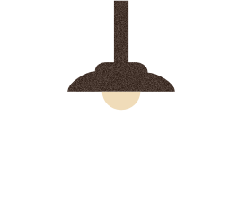
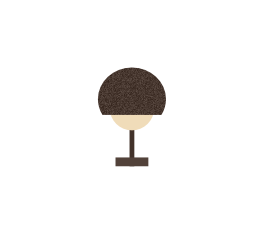
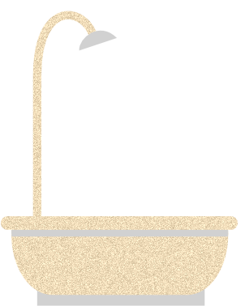
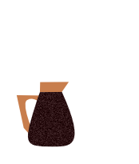
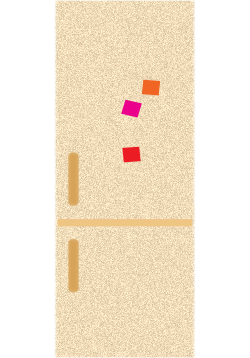
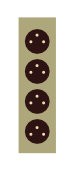
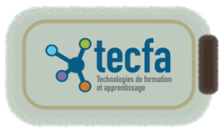

Économiser l’énergie, un geste pour la planète !
Chaque jour, nos petits gestes à la maison ont un grand impact sur l’environnement. En Suisse, des milliers de foyers ont participé à des programmes d’efficacité énergétique comme Eco21. Grâce à ces initiatives, les familles ont appris à réduire leur consommation d’électricité, à remplacer leurs appareils énergivores, et à adopter de bons réflexes durables.
Ta mission est d’explorer la maison et de cliquer sur les
objets interactifs qui te montreront des actions
concrètes pour
réduire ta consommation d’électricité.
Un petit renard malin, ambassadeur de l’éco-comportement,
t’accompagnera et te donnera des
conseils pratiques pour adopter les bons réflexes
du quotidien.
Cette application s’appuie sur une étude scientifique menée à
l’Université de Genève :
Beyond short-term savings: A ten-year analysis of energy
efficiency program outcomes in Swiss households
(Cabrera, Lambert, Naef, Bertholet & Patel, 2024 –
Energy Research & Social Science, 109).
L’étude analyse les effets à long terme des programmes suisses
d’efficacité énergétique, notamment Eco21, mené par les Services
Industriels de Genève (SIG) entre 2009 et 2019. Les chercheurs ont
étudié les habitudes de plus de 17 000 foyers et leurs données de
consommation électrique sur dix ans. Résultat : les ménages ayant
participé aux programmes ont réduit leur consommation d’électricité
de 19 à 26 % grâce à des gestes simples et au remplacement
d’appareils énergivores.
Ressources complémentaires :







Le saviez-vous ?La consommation moyenne d’électricité des foyers suisses varie selon le type de logement :
- Un appartement pour une personne consomme environ 2 200 kWh/an.
- Une maison individuelle pour deux personnes consomme environ 3 550 kWh/an.
source" alt="Labo MALTT" />

Pour en savoir plus : source." alt="Logo TECFA, centre d’apprentissage et de formation" />